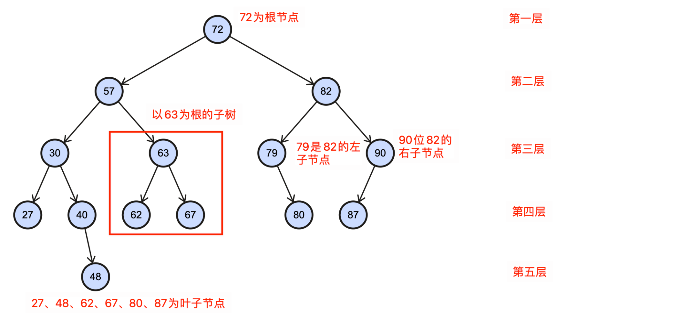
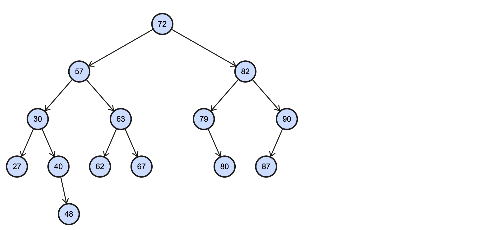
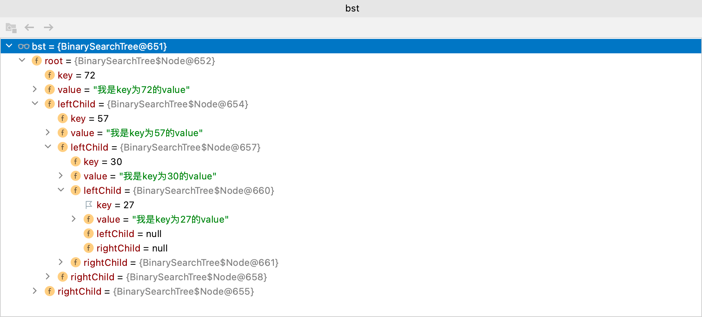
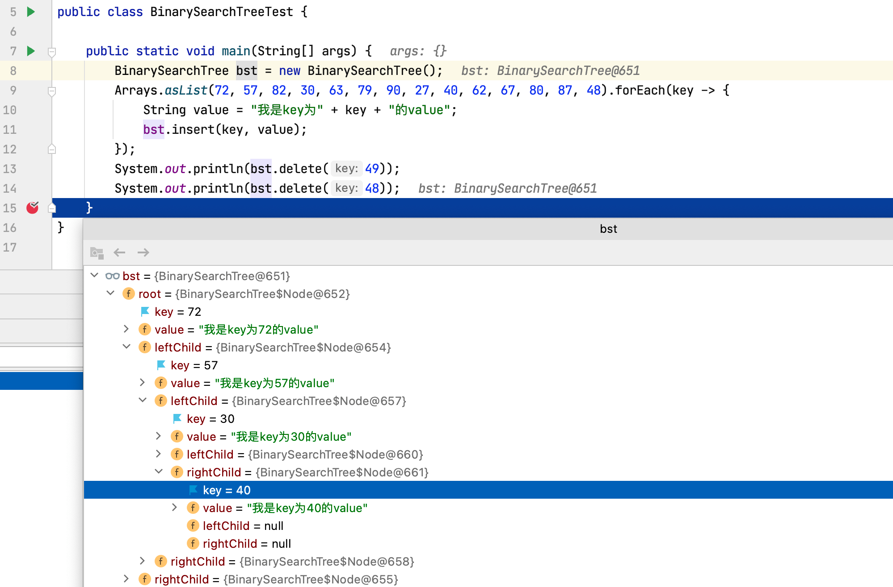
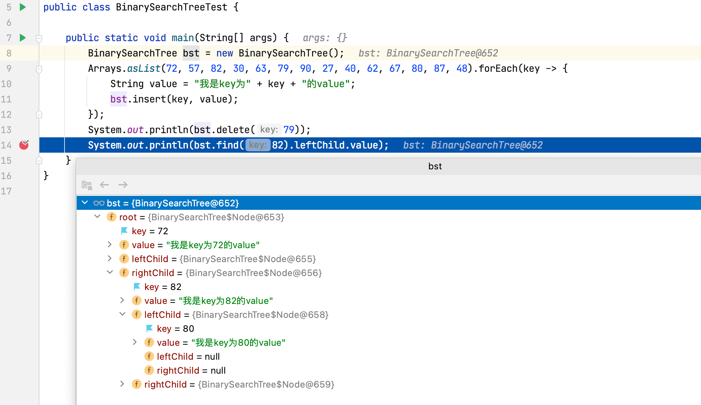
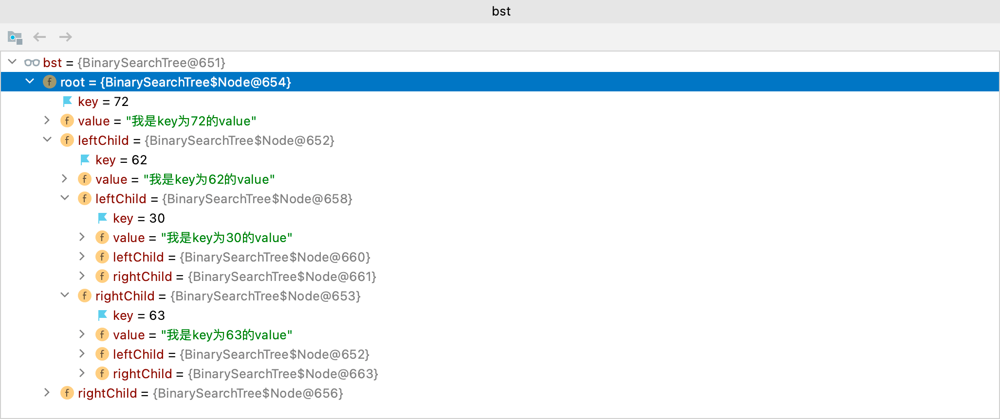
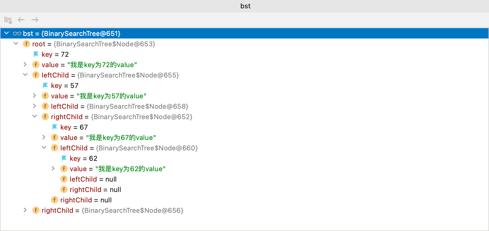
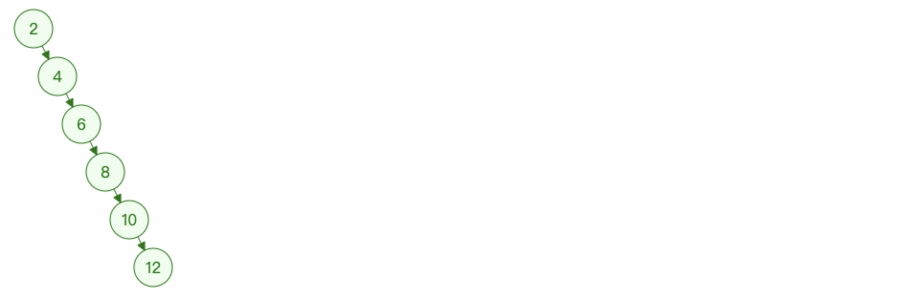

树（Tree）是一种很有趣的数据结构，它既能像链表那样快速的插入和删除，又能像有序数组那样快速查找。树的种类很多，本节将记录一种特殊的树————二叉树（Binary Tree）。二叉树的每个节点最多只能有两个子节点，通常称为左子节点和右子节点。如果一个二叉树的每个节点的左子节点的关键字值小于该节点，右子节点的关键字值大于等于该节点，那么这种二叉树也称为二叉搜索树（Binary Search Tree,BST），本节主要关注BST。
相关术语
查看一个BST例子：

- 路径：从一个节点走到另一个节点，经过的节点顺序就称为路径；
- 根：树的顶端节点称为根，一个数只能有一个根节点，并且从根节点到任意子节点只能有一条路径；
- 父节点：每个节点（除了根）都有一条边向上连接到另一个节点，这个节点就是下面节点的父节点；
- 子节点：每个节点（除了叶子节点）都有一条或两条边向下连接其他节点，下面这些节点就是当前节点的子节点。子节点分为左子节点和右子节点；
- 叶节点：没有子节点的节点称为叶子节点，或叶节点；
- 关键字：节点中的数据，比如上图中的数值。
操作BST
在操作BST前，我们先用代码定义一个BST的骨架：
1 | /** BST */ |
下面的这些操作都以这个BST为例：

插入
假如我们需要插入一个key为88的节点，需要经过如下步骤：
- 从根节点出发，88比72大，所以走右子节点82路径；
- 88比82大，所以走右子节点90路径；
- 88比90小，所以走左子节点87路径；
- 88比87大，并且87的右子节点为空，所以我们最终把88作为87的右子节点插入树中。
当key重复时，可以选择覆盖或者忽略，这由业务决定。
上述过程动态图如下所示：

Java代码实现如下：
1 | /** BST */ |
编写测试程序：
1 |
|
以debug的方式运行程序，查看bst结构：

bst结构和上图一致，有兴趣可以自己验证。
查找
假如我们需要查找key为67的节点，需要经过如下步骤：
- 从根节点出发，67比72小，所以走左子节点57路径；
- 67比57大，所以走右子节点63路径；
- 67比63大，所以走右子节点67路径；
- 67等于67，找到目标节点，退出；
- 如果搜索直到叶子节点都没找到，则返回空。
上述过程动态图如下所示：

Java代码实现如下：
1 | /** BST */ |
编写测试程序：
1 | public class BinarySearchTreeTest { |
输出如下：
1 | 我是key为87的value |
最大最小值
在BST里查找最大值和最小值是非常容易的一件事，根据BST特性，小的值都分布在左节点，大的值都分布在右节点，所以最小值查找方法为：从根节点出发，一直往下查找左子节点，当该节点不再有左子节点时，该节点就是最小节点；最大值查找方法为：从根节点出发，一直往下查找右子节点，当该节点不再有右子节点时，该节点就是最大节点。
查找最小值图示：

查找最大值图示：

Java代码实现如下：
1 |
|
编写测试程序：
1 | public class BinarySearchTreeTest { |
输出如下所示：
1 | 我是key为27的value |
删除
删除是BST操作里最复杂的一个，因为需要考虑的因素比较多：
- 被删除的节点是叶子节点；
- 被删除的节点只有一个子节点；
- 被删除的节点有两个子节点。
下面我们逐个分析：
被删除的节点是叶子节点
这种情况最为简单，删除节点前需要先找到该节点，过程和上面的查找类似。找到需要删除的节点后，如果是叶子节点，则将该节点的父节点引用置为null，被删除的节点没了引用，后续由GC自动回收。
假如我们需要删除key为48的节点，需要经过如下步骤：
- 从根节点出发，48比72小，所以走左子节点57路径；
- 48比57小，所以走左子节点30路径；
- 48比30大，所以走右子节点40路径；
- 48比40大，所以走右子节点48路径；
- 48等于48，所以当前节点就是需要被删除节点；
- 48没有子节点，为叶子节点，所以直接将40的右子节点引用设置为null即可。
该过程如下图所示：

Java代码实现如下：
1 | /** BST */ |
编写测试程序：
1 | public class BinarySearchTreeTest { |

1 | false |
可以看到40的右子节点已经被删除。
被删除的节点只有一个子节点
这种情况也比较简单，只需要将被删除节点的子节点和其父节点建立连接关系即可。
假如我们需要删除key为79的节点，需要经过如下步骤：
- 从根节点出发，79比72大，所以走右子节点82路径；
- 79比82小，所以走左子节点79路径；
- 79等于79，所以当前节点就是需要被删除节点；
- 79只有一个右子节点，因为79是82的左子节点，所以直接将80设置为82的左子节点即可。
该过程如下图所示：

Java代码实现如下：
1 | /** BST */ |
编写测试程序：
1 | public class BinarySearchTreeTest { |

程序输出：
1 | true |
被删除的节点有两个子节点
这种情况比较复杂，删除的节点不能用删除节点的某个子节点来代替。比如现在需要删除上述BST的57节点，假如用57节点的右子节点63代替该节点，那么63的左子节点既不能是62，也不能是57的左子节点30。
这种情况下需要找到被删除节点的中序后继节点（successor）来代替它。所谓的中序后继节点就是：整个树中关键字值比被删除节点大，并且比被删除节点右子节点小的那部分节点中的关键字值最小的节点。
根据中序后继节点的定义来看，要找到它也很简单：
- 从被删除节点的右子节点出发，一直往下找左子节点，当该节点不再有左子节点时，该节点就是中序后继节点；
- 如果被删除节点的右子节点没有左子节点，那么它就是要找的中序后继节点。
举个例子，比如现在需要删除上述BST的57节点，那么它的中序后继节点为62；假如要删除的节点为63，那么它的中序后继为67：
当删除的节点为57时，过程如下所示：

当删除的节点为63时，过程如下所示：

编写查找中序后继节点的方法：
1 | /** BST */ |
完成删除方法的最后一个部分：
1 | /** BST */ |
编写测试程序测试一下：
当删除的节点为57时：
1 | public class BinarySearchTreeTest { |
输出如下：
1 | 删除57节点: true |

当删除的节点为63时：
1 | public class BinarySearchTreeTest { |
输出如下：
1 | 删除63节点: true |

遍历
遍历树指的是以一种特定顺序访问树的每一个节点，这个顺序分为：中序、前序和后序。
中序遍历
中序遍历的步骤为：
- 递归遍历目标节点的左子节点；
- 访问目标节点本身；
- 递归遍历目标节点的右子节点。
Java实现如下：
1 | /** BST */ |
编写测试程序：
1 | public class BinarySearchTreeTest { |
输出如下：
1 | 27 30 40 48 57 62 63 67 72 79 80 82 87 90 |
这个过程如下动图所示：

前序遍历
前序遍历的步骤为：
- 访问目标节点本身；
- 递归遍历目标节点的左子节点；
- 递归遍历目标节点的右子节点。
Java实现如下：
1 | /** BST */ |
编写测试程序：
1 | public class BinarySearchTreeTest { |
输出如下：
1 | 72 57 30 27 40 48 63 62 67 82 79 80 90 87 |
这个过程如下动图所示：

后序遍历
前序遍历的步骤为：
- 递归遍历目标节点的左子节点；
- 递归遍历目标节点的右子节点；
- 访问目标节点本身。
Java实现如下：
1 | /** BST */ |
编写测试程序：
1 | public class BinarySearchTreeTest { |
输出如下：
1 | 27 48 40 30 62 67 63 57 80 79 87 90 82 72 |
这个过程如下动图所示：

完整代码
1 | /** |
BST效率
节点的查找需要从根节点开始一层一层往下找，树节点数和层数的关系如下表所示：
| 节点数 | 层数 |
|---|---|
| 1 | 1 |
| 3 | 2 |
| 7 | 3 |
| 15 | 4 |
| 31 | 5 |
| … | … |
| 1023 | 10 |
| … | … |
| 32767 | 15 |
| … | … |
| 1048575 | 20 |
| … | … |
| 33554432 | 25 |
| … | … |
| 1073741824 | 30 |
假设节点数为N，层数为L，那么不难看出它们的关系为：N=2^(L-1)，所以L=log2(N+1)，大约为log2N，大O表示法为O(logN)。
红黑树
BST的缺陷
虽然BST结合了数组和链表的优势，但它也不是完美的，当BST不平衡的时候，查找操作效率急剧下降。举个比较极端的例子：
假如插入的数据是升序数据：2，4，6，8，10，12…，这时候BST如下所示：

这时候BST实际上就是一个链表结构了，搜索效率为O(N)。一个BST完全平衡和完全不平衡的情况比较少见，就概率来说，BST的搜索效率介于O(N)与O(logN)之间。
红黑树规则
为了解决非平衡树搜索效率下降的问题，人们又提出了红黑树的概念。在红黑树中，每个节点要么是红色的要么是黑色的，红黑树在插入和删除的过程中，需要遵循某些特定的规则，遵循这些规则可以确保数始终是趋于平衡的。
红黑树除了遵循基本的BST规则外，还需遵循以下4个规则：
- 每一个节点不是红色就是黑色；
- 根节点一定是黑色的；
- 如果节点时红色的，那么它的子节点必须都是黑色的；
- 从根节点到叶子节点或空子节点的每条路径，必须包含相同数目的黑色节点。
在数据插入和删除过程中，如果违背了上述4个规则，则树会执行以下操作进行修正，以重新满足上述4个规则：
- 改变节点的颜色；
- 执行旋转操作。
红黑树演示
下面通过一个动图演示红黑树如何处理升序数据：2，4，6，8，10，12的插入，使得树趋于平衡：

参考自《Java数据结构与算法（第二版）》，上述BST图片均来自http://btv.melezinek.cz/binary-search-tree.html网站，红黑树示例来自https://www.wztlink1013.com/visualization/RedBlack.html。